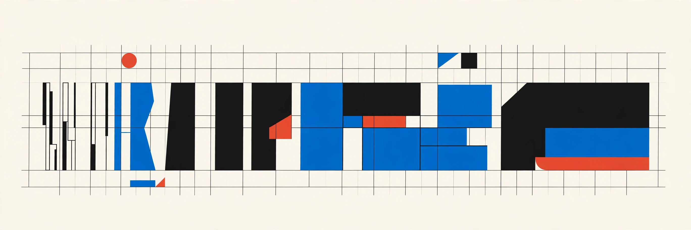
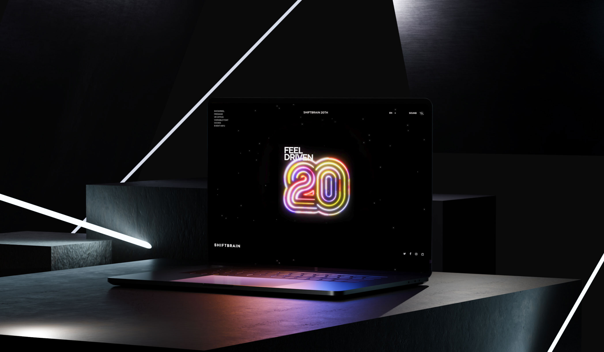
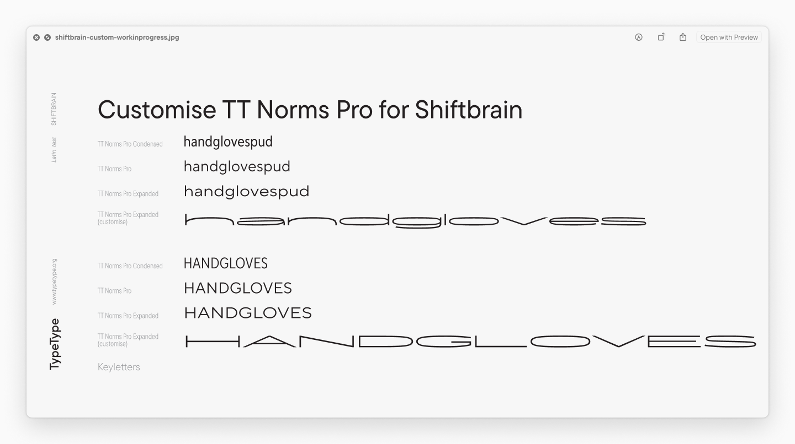
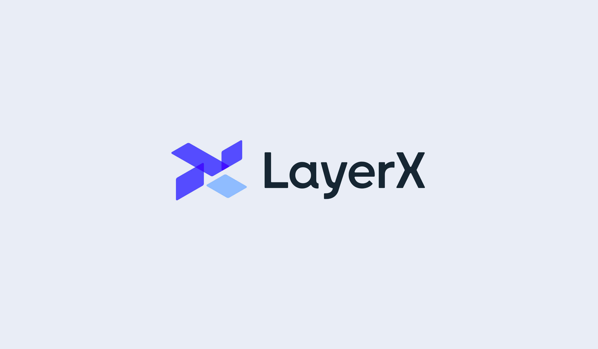
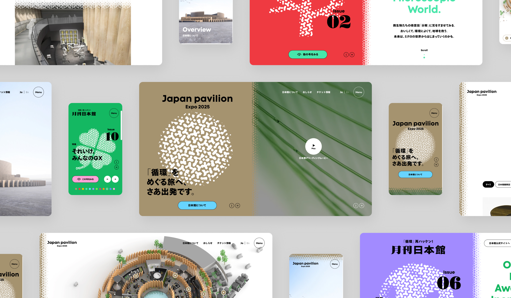
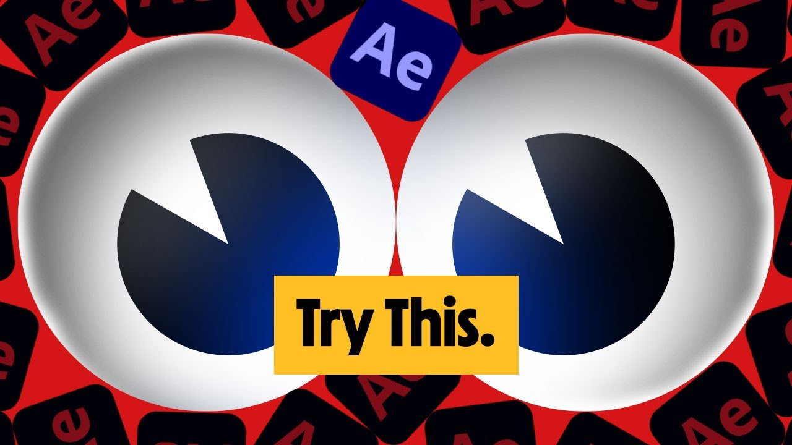
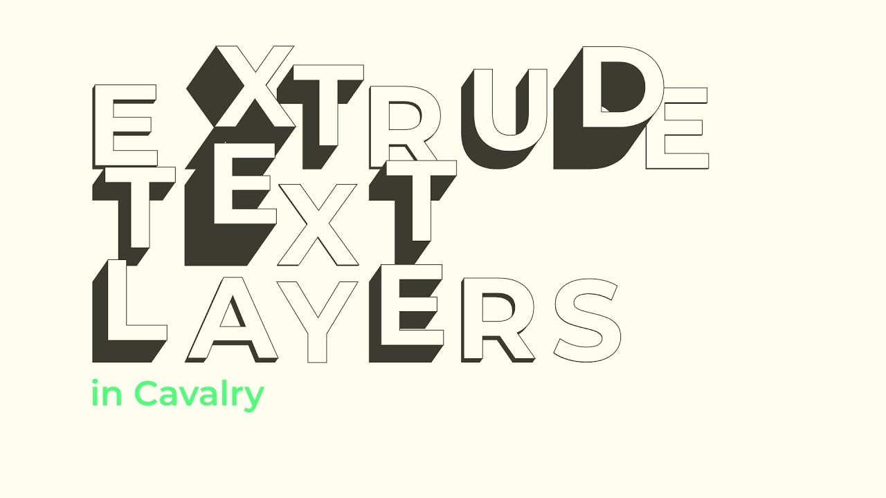

ニュース
今日のハイライト
- トップはDixonBaxiによるEA SPORTS FC 27刷新。描き直さず、既にある「三角」を解き放って動くシステムにする発想が今日の核。
- 広告＋モーション系は6本。12fpsの手触りで作るYelp、存在しない結婚式場The Vow、Tescoのバン・ツアーなど、手法が全て違う。
- その他はセンサー自体が90度回るBOSMAの6Kカメラ。縦型を「切り出し」ではなく撮影の前提にする転換が、作り手に直接効く。
1. 1つの三角を解き放つ、DixonBaxiによるEA SPORTS FC 27刷新
DixonBaxiはFCの三角マークを描き直さず、そのまま中心に据えて「解き放った」。三角はワイヤーフレーム、ハーフトーン、ピクセルの縁、緑のベタ、光のビームと姿を変え、形が変わらないからこそ一体感が保たれる。タイポはCruyff Sans Condensedが主役で、グリッド自体も三角の斜め geometry で組み、ポスターからコントローラー、ゲーム内まで同じシステムで通す。ローンチトレーラーは初日500万再生超。「形を固定し、振る舞いを開放する」動き前提の identity 設計として必見。
2. 12fpsの手触りで村を作る、PanicによるYelp『It Takes a Village』
Yelpの identity 刷新後、初のアニメーション・キャンペーン。監督Gints Gutmanis率いるPanicが、新しい2Dイラスト様式をそのままモーション化した。レビューでつながる近所を「積み木のミニチュア村」にし、赤いレビューカードが物語を前に進める。全編12fpsでストップモーション的な手触りを作り、積み木自体をトランジションに使い、ペットだけセルアニメで可愛さを足す。イラスト様式を壊さずに奥行きと質感を足す方法が、ブランドモーションの実例として参考になる。
3. 存在しない結婚式場で問う、Unchained At Last『The Vow』
IMPACT BBDOによる、米国の児童婚を問うキャンペーン。子ども花嫁専用の結婚式プランニングサービス「The Vow」を、実在するかのように磨き上げた美学と aspirational な言葉で作り込む。サービスは嘘だが、2000〜2021年に米国で合法的に結婚した未成年は約31.5万人という現実は本物。「統計ではなく、存在してはいけない商業サービスとして見せる」ことで、最初の不信感を会話と行動に変える設計が鋭い。
4. TVのバンを現実とSNSへ、Tesco『Christmas Van Tour』
UncoveredによるTescoのクリスマス施策。BBH London制作のTVCM『The Wrong Address』に登場する配送バンを主役に据え直し、ロンドン／マンチェスター／ウェールズなどで、屋台になったりポップアップストアになったりする surprise-and-delight を展開し、それを social-first の「目撃」フィルムにする。TVの世界観を、現実の体験とSNSの反復視聴に翻訳する二段構えが、季節キャンペーンの組み立てとして学べる。
5. コントローラーから手を離さないための「もう1組の手」、Little Caesars
McKinneyとCYLNDR Studiosによるゲーマー向け施策。ゲーム発売直後のマラソンプレイで「コントローラーで手が塞がりピザが食べられない」という一点に絞り、ピザを運ぶ Extra Set of Pizza Hands という実物デバイスを作ってSNSで展開した。販売はしないが実物は作り、クリエイターとのコラボで使う割り切りが、プロダクト風アクティベーションの軽さとして面白い。
6. 生成AIと空間表現の最前線スタジオHEXに、Charlotte Mikkelborgが合流
WPP Productionの frontier studio HEX（生成AI、空間コンピューティング、バーチャルプロダクション、インタラクティブ体験）が、Charlotte MikkelborgをUK Creative Innovation Leadに迎えた。ColdplayのVRコンサートや、Apple Vision Pro向け初のApple TV+シリーズの監督経験を持つ人物で、「技術だけでは響かない。感情とクラフトと一緒に」というHEX側のコメントが、今のAI映像の論点をそのまま示す。人事ニュースだが、ブランド映像の制作体制がどこへ動くかの指標として読める。
7. センサーとレンズが90度回る、BOSMA『VEGA H2 6K』日本初公開
アストロデザインブースで日本初公開された6Kフルサイズカメラ。最大の特徴は特許機構HVSで、センサーとレンズマウントとレンズを一体で90度回し、本体を傾けずに横位置と縦位置を切り替える。縦でもセンサー全体を使えるため、縦型を横から切り出す派生ではなく、撮影段階から構図を作る前提にできる。ToFハイブリッドAF、無段階可変ND内蔵、ProRes対応まで1台にまとめ、国内は2027年Q1発表・100万円前後を想定。
特集 ― デザイン特集マガジン・第11号

文字が伸びる、画面が呼吸する
――SHIFTBRAINのバリアブルフォントとWebの設計
関矢のリストにある「siftbrain」は、正確にはSHIFTBRAIN。世田谷とアムステルダムを拠点に、ブランドとWebを横断する制作会社だ。紙のポスターでは文字は固定される。だがWebでは、文字そのものが伸び、縮み、動ける。SHIFTBRAINの面白さは、その可変性を装飾ではなく「アイデンティティの道具」として設計した点にある。象徴が、創業20周年で自らのために作ったフォントだ。
勉強ポイント
- 文字を「選ぶ」から「設計する」へ：既製フォントの太さだけでなく、幅（Width）という軸を自社専用に作ると、見出しの伸縮だけでブランドの声になる。映像のタイトルでも、文字の幅の変化は速度や圧の表現になる。
- ロゴアニメーションとWebのメインビジュアルを同じ原理で作る：LayerXでは「レイヤーが集まる」という社名の意味を、ロゴの動きとサイト冒頭で反復した。静止画・モーション・インタラクションを別々に考えない。
- 抽象概念は、ホバーや遷移で触らせる：日本館では「分裂・循環」という抽象的なビジュアルシステムをWebGLのホバー演出やページ遷移のモーフィングで体験させた。説明文で補う前に、操作で感じさせる。
1. 7.6倍に伸びる文字 — SHIFTBRAIN 20thと専用フォント「SHIFTBRAIN Norms」
2023年2月公開の「SHIFTBRAIN 20th Special Site」は、周年ロゴ、特設サイト、ショーリール、VRオフィス、コーポレートフォント、グッズまでを一貫して作った自社プロジェクトだ。公式ページはその狙いを「『楽しい』を爆発させる」と記し、FWA of the DayとCSSDA Website of the Dayを受賞している。
核になったフォント制作を、共同制作したTypeTypeが詳しく公開している。ベースは同社のコーポレート書体だったTT Norms Pro Regular。そこにWidth軸を持たせ、横幅を460ptから3480ptへ、実に7.6倍まで可変させた。通常のCondensed→Expandedが約1.5倍程度であることを考えると、これは実用域を超えた「極端さ」自体がコンセプトだと分かる。さらに日本語書体A1 Gothic Regularと並べても崩れないよう、ベースラインや行送りのメトリクスを調整し、社員30人の似顔絵アイコンとロゴまでフォント内に埋め込んだ。文字「S」を打つとロゴに置換されるOpenTypeの仕掛けまである。
つまりこれはフォントファイルであると同時に、グッズにもWebにも展開できる「可変のロゴシステム」だ。静止したロゴを配るのではなく、伸び縮みする規則そのものを配っている。


2. デジタルなのに柔らかい — LayerX Branding（2023）
2023年8月のLayerXコーポレートブランドリニューアルでは、コンセプトとコピーをPARKが、SHIFTBRAINがロゴ、ロゴアニメーション、コーポレートサイト、各種ツールを担当した。ミッションは「すべての経済活動を、デジタル化する。」。硬くなりがちなテック企業の刷新で、SHIFTBRAINが選んだIdeaは公式に「デジタルと、“人”らしい柔らかさ」と記されている。
新ロゴは、社名の由来である「社会にX番目のレイヤーを足していく」ことと、情報や人が同社を起点に集まる様を表す。その考えをロゴアニメーションとサイトのメインビジュアルでも同じ原理で繰り返し、一貫した佇まいを作った。サイト側では、誠実さや対話的な社風が伝わるよう、人の写真を随所に置く。designing誌の鼎談では、ヒアリング段階から三社が共同でコンセプトを固めたことが、言葉とビジュアルの乖離を防いだと語られている。ロゴの形だけでなく、「集まる」という動きの文法まで決めてから展開する順序が効いている。

3. 「循環」を遷移で見せる — 大阪・関西万博 日本館公式サイト（2024）
2025年大阪・関西万博の日本館テーマは「いのちと、いのちの、あいだに」。SHIFTBRAINは公式サイトとWebマガジン「月刊日本館」の2サイトを担当した。日本デザインセンターが作った「分裂・循環」を表すビジュアルシステムを、WebGLでボタンやサムネイルのホバー演出に展開し、「月刊日本館」では表紙同士がシームレスにつながるモーフィングとページ遷移で循環そのものを表現したという。
ここで重要なのは、抽象的なテーマをイラストで説明し直していないことだ。遷移のつながり方、ホバーした時の分裂の仕方という「画面の振る舞い」にテーマを宿している。同時に、万博という公共性の高い場であるため、配色や可読性といったアクセシビリティにも配慮したと公式は記す。派手なWebGLと読みやすさは両立させなければならず、その緊張感がこの仕事の質を作っている。映像制作に置き換えれば、カットそのものではなく「つなぎ方」にテーマを置く編集に近い。

SHIFTBRAINの3作に共通するのは、デザインを「完成した形」ではなく「振る舞いの規則」として渡していることだ。フォントは伸び、ロゴは集まり、ページは循環する。関矢の映像でも、1カットの完成度と同じくらい、変化の規則を先に決めることが効くはずだ。
出典
- SHIFTBRAIN公式サイト（作品一覧）：https://shiftbrain.com/
- SHIFTBRAIN 20th Special Site｜SHIFTBRAIN：https://shiftbrain.com/work/shiftbrain20th/
- LayerX Branding｜SHIFTBRAIN：https://shiftbrain.com/work/layerx-branding/
- 日本館公式サイト案件ページ｜SHIFTBRAIN：https://shiftbrain.com/work/japan-pavilion/
- A Font with a Wide Reach: A Special Project for SHIFTBRAIN's 20th Anniversary｜TypeType：https://typetype.org/blog/a-font-with-a-wide-reach-a-special-project-for-shiftbrain-s-20th-anniversary/
- SHIFTBRAIN・PARKと振り返る、LayerXコーポレートブランド刷新の軌跡｜designing：https://designing.jp/layerx-corporatebrand-renewal
AE／Cavalry チュートリアル・表現コーナー
動きの周りで差がつく
AEは仕上げの小さな技の束、Cavalryは文字を立体に押し出すテンプレート化リグ
液体・視線・揺れ。仕上げで効く10の小技 ― 10 Underrated Motion Design Techniques I LOVE／Ben Marriott

見落とされがちな10技法を、ハートの液体アニメで実演する1本（約18分）。飛沫をSimple Chokerで丸める、CC Particle Worldの発生源を対象に追従させる、調整レイヤーのTransformに wiggle(12, 3) でゲートウィーブ（フィルムの微揺れ）を足す、Mirror×2で完全対称の装飾を作る、視線誘導（Eye Trace）までを一気に通す。
表現ポイント：核は「主役の動きは変えず、接触・分離・揺れの“周り”を設計する」こと。広告の商品カットやタイトル周りで、動きは合っているのに何か平板、という時に引き出しとして効く。特にゲートウィーブは1行で全体にアナログな質感が乗り、12fpsのPosterizeと合わせると手描き感まで寄せられる。
文字を変えれば全体が追従する、立体テキストのリグ ― Extrude Text Layers in Cavalry（Tutorial 50）／Kamil K

入力文字列をJavaScriptで1文字ずつの配列に分解し、全文字をExtrudeして押し出し、各文字のアンカーを直してからDuplicatorで単語・行へ再構築するリグ。単語→複数行へ段階的に複雑化し、文字ごとの色付けで詰まるIndex to Colorの問題（Sub-Meshを潰して解決）や、Duplicatorを2段重ねる際のIndex Context Depthまで含む実務寄りの解説。
表現ポイント：核は「テキストは打つものではなく、分解→加工→再構築するデータとして扱う」こと。入力を差し替えるだけで全体が更新されるため、タイトル違い・言語違いを量産するCMやSNS展開のテンプレートにそのまま転用できる。
今日試すなら：まずAEのゲートウィーブから。手持ちのカットに調整レイヤー1枚＋1行で、仕上げ感の違いがすぐ分かる。Cavalryのリグは腰を据えてテンプレ化する価値がある。